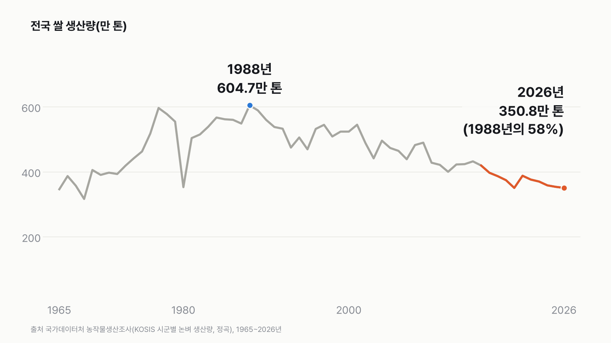
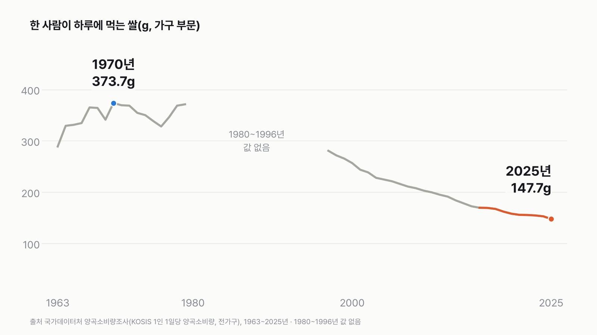
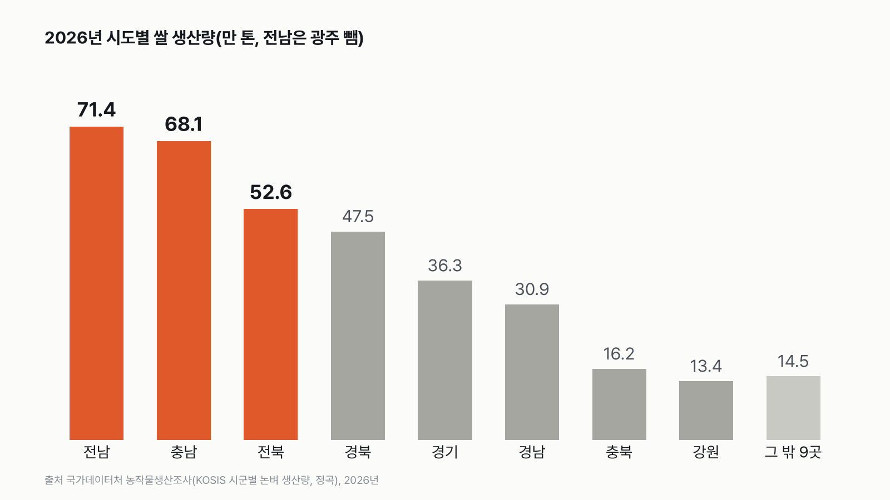

쌀 생산이 또 줄었어요. 한 사람이 먹는 쌀은 얼마나 줄었을까?
쌀 생산은 1988년의 절반 남짓으로 줄었고, 집에서 한 사람이 먹는 쌀은 1970년의 절반이 안 돼요. 다만 앞은 나라 전체 양이고 뒤는 한 사람 양이라, 두 숫자를 빼서 견줄 수는 없어요.

3줄 요약
- 2026년 쌀 생산량은 350.8만 톤이에요. 2025년(353.9만 톤)보다 0.9% 적어요.
- 가장 많았던 1988년(604.7만 톤)과 견주면 58%예요.
- 가정에서 한 사람이 하루 먹는 쌀은 1970년 373.7g에서 2025년 147.7g으로, 그때의 39.5%예요.
생산은 1988년이 가장 많았어요
쌀 생산량은 1988년 604.7만 톤이 가장 많았어요. 2026년은 350.8만 톤으로 그때의 58%예요. 1965년(346.4만 톤)과 비슷한 양이에요.
2026년은 2025년보다 0.9% 적어요. 벼를 심은 넓이와 같은 넓이에서 거둔 쌀을 함께 보면 이래요.
| 1988년 | 2025년 | 2026년 | |
|---|---|---|---|
| 생산량 | 604.7만 톤 | 353.9만 톤 | 350.8만 톤 |
| 벼 재배면적 | 125.7만 ha | 67.7만 ha | 67.0만 ha |
| 10a(1,000㎡)당 쌀 | 481kg | 522kg | 524kg |
- 재배면적은 1988년의 53%로 줄었어요.
- 같은 넓이에서 거두는 쌀은 1988년보다 많아요.
먹는 쌀은 1970년의 39.5%
가정에서 한 사람이 1년에 먹는 쌀은 2025년 53.9kg이에요. 하루로 나누면 147.7g이에요.
가장 많았던 1970년엔 1년 136.4kg, 하루 373.7g이었어요. 2025년은 그때의 39.5%예요.

최근 10년은 해마다 줄었어요
| 해 | 한 사람 하루 쌀(가구) |
|---|---|
| 2016년 | 169.6g |
| 2020년 | 158.0g |
| 2024년 | 152.9g |
| 2025년 | 147.7g |
- 2016년부터 2025년까지 한 해도 빼지 않고 줄었어요.
- 2025년은 1년 전보다 5.2g 적어요.
어디서 많이 나나요
2026년 시도별 생산량은 전남 71.4만 톤, 충남 68.1만 톤, 전북 52.6만 톤 순이에요. 세 곳을 더하면 전국의 55%예요.
보도자료의 '전남광주' 73.6만 톤은 광주를 더한 값이에요. 전남만 따로 셌어요.

숫자를 다시 보며
생산량은 나라 전체 양이고, 소비량은 가정에서 한 사람이 먹는 양이에요. 식당·식품 공장에서 쓰는 쌀은 소비량에 들어 있지 않아요. 그래서 생산에서 소비를 빼 '남는 쌀'을 낼 수는 없어요. 왜 줄었는지도 이 자료에는 없어요. 여러분 집은 쌀 10kg 한 포대를 얼마 만에 비우나요?
이 숫자는 어디서 왔나요
출처
기준일 생산은 2026년 값(2026년 11월 13일 공표), 소비는 2025년 값이에요. 2026년 소비량은 2027년 1월에 나와요. KOSIS 값은 2026년 11월 15일에 받았어요.
| 데이터 | 출처 | 쓰임 |
|---|---|---|
| 논벼 생산량·재배면적·10a당 생산량 (KOSIS DT_1ET0034) | 국가데이터처 「농작물생산조사」 1965~2026 | 생산 흐름, 시도별 |
| 1인당 양곡 소비량 (KOSIS DT_1ED0001·DT_1ED0002) | 국가데이터처 「양곡소비량조사」 1963~2025 | 한 사람이 먹는 쌀 |
어떻게 셌나요
- 생산: 국가데이터처 「농작물생산조사」 시도별 논벼 생산량(KOSIS DT_1ET0034), 1965~2026년. 톤을 만 톤으로 바꾸고 소수 첫째 자리에서 반올림했어요.
- 소비: 국가데이터처 「양곡소비량조사」 1인당 연간 쌀 소비량(DT_1ED0001)과 하루 소비량(DT_1ED0002), 1963~2025년. 가구 부문만이에요.
- 견준 값: 2026년 ÷ 1988년, 2025년 ÷ 1970년.
| 항목 | 값 | 잰 것 / 가정 |
|---|---|---|
| 2026년 쌀 생산량 | 350.8만 톤 | 잰 것 |
| 가장 많았던 해 | 1988년 604.7만 톤 | 잰 것 |
| 한 사람 하루 쌀(가구, 2025) | 147.7g | 잰 것 |
| 한 사람 하루 쌀(가구, 1970) | 373.7g | 잰 것 |
한계 4가지
이 데이터로 말할 수 없는 것
- 소비량은 가정에서 먹는 쌀만 잡아요. 식당, 급식, 식품 공장이 쓰는 쌀은 빠져 있어요.
- 하루 소비량은 1980~1996년 칸이 비어 있어요. 연간 소비량은 그 해에도 있어요.
- 생산은 나라 전체, 소비는 한 사람 평균이라 서로 빼거나 나눠 '남는 쌀'을 낼 수 없어요. 정부 재고, 수입, 가공용 쌀도 따로 있어요.
- 왜 줄었는지는 이 자료에 없어요.
새 글 나오면 받아 보기
피드 리더 앱에 이 사이트 주소를 한 번 넣어 두면, 새 글이 올라올 때 앱에 떠요. 가입이나 메일 주소는 필요 없어요.
받는 법 보기
- 피드 리더 앱을 하나 골라요. 새 글을 모아 보여 주는 앱이에요. 예를 들면 Feedly나 Inoreader가 있어요. 둘 다 무료고 웹·휴대폰에서 써요.
- 앱에서 '구독 추가'(+)를 누르고 아래 주소를 붙여 넣어요.
- 끝이에요. 새 글이 올라오면 앱 목록에 떠요.
https://protofu.github.io/opendata-insight/feed.xmlFeedly를 쓴다면 여기를 눌러 바로 추가할 수도 있어요.